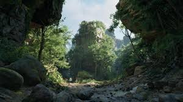
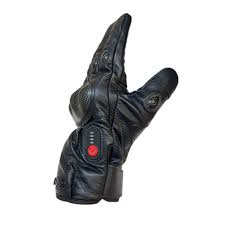
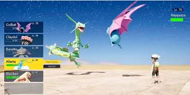
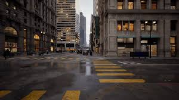
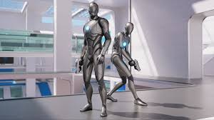

Portfolio
My Projects
This is a project i was apart of that was headed by PAU gamming commity. It was made to be a mobile game that could be played for all student. It was made so that the rewards will affect student school life. Due to the project still going no further info will be given.

Another project i was part of that centralised in the production of self defence gedget but the right to said plans were later solld of to a private company.
This is my current personal project that i am working on. It involves the mixing of virtual reality with real life in order for a unique gaming experience

This a game that was abandon due to coding errors and lawsuits from pokemon. This game is just about the creation of creatures and batteling other creatures as well

This is another project in where you are recreate a country in your own image in a virrtual world. In this work you will also be graded and work against other countries made by other

A first person shoter that is based on PAU campus. No other info will be reaslesd